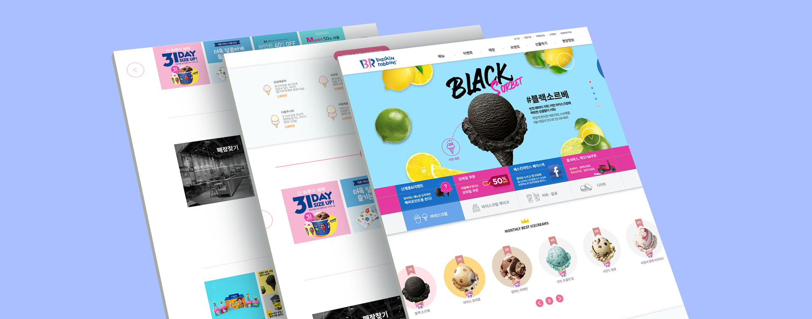

- 배스킨라빈스 메인페이지 리뉴얼
간단한 스크립트와 제이쿼리 플러그인이 사용되었습니다. bxslider, 상단 내비 드롭다운, 상단 내비고정, 탭 메뉴 등이 사용되었습니다. 요소와 단어의 숙달과 선택자 우선 순위에대한 이해를위해 "요소.선택자('#,.')" 구조의 CSS 작성방식을 택하였습니다.
-
- Date
- 2019. 11
-
- Role
- Web design, Publishing 100%
-
- Viewport
- Adaptive
-
- Cross Browsing
- Edge, Ie10+, Chrome, Firefox, Opera
-
- URL
- # Main
| Category | Source | Related keywords |
|---|---|---|
| html | index.html | html5 |
| css | style.css jquery.bxslider.css | css3 |
| js | main.js jquery.bxslider.js html5shiv.js | jquery |